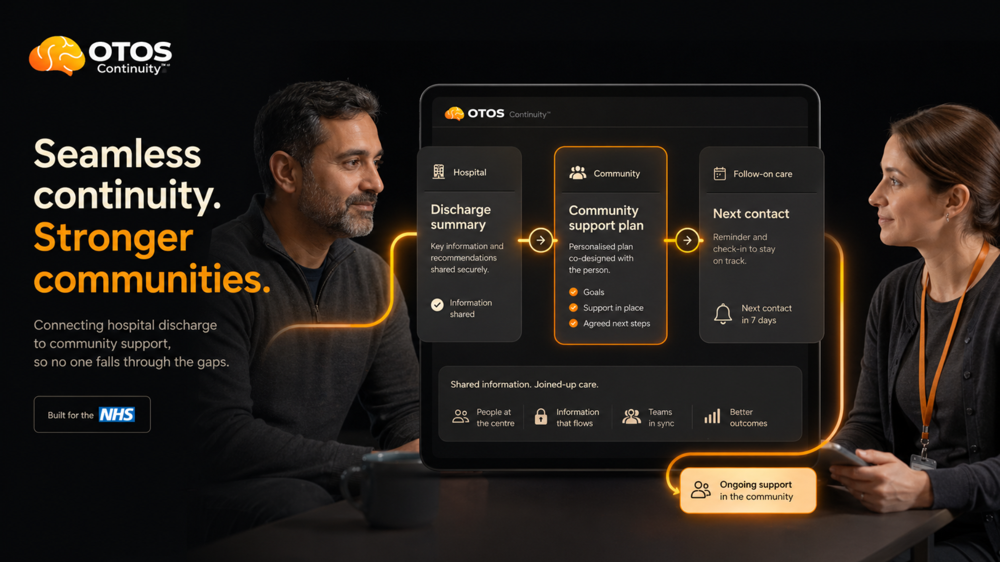
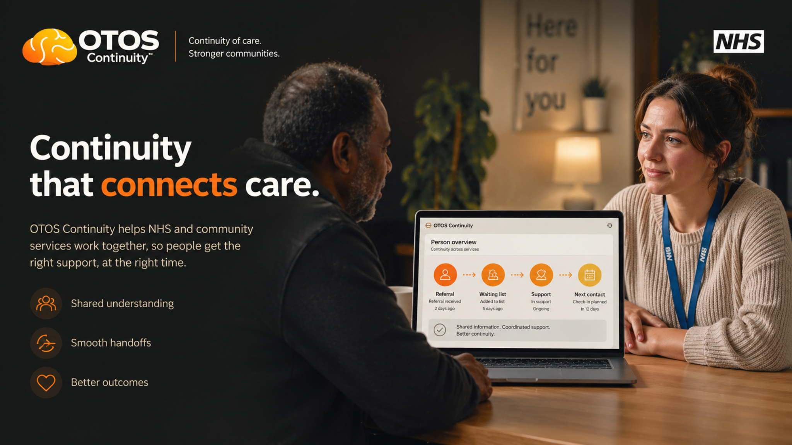

Diagrams, mockups & infographics
What it looks like.
What it looks like.
In practice.
The OTOS dashboard, service diagrams, infrastructure blueprint, continuity loop and NIA infographics. All images expandable. This is the only page where large images are appropriate.
The pilot overview dashboard
What a commissioner sees at Week 7.
Real pilot data structure. Anonymous threads. 89% continuity held. 94% handoff receipt rate. No identifying details.






Partners shown are invited and/or in discussion. Inclusion does not imply confirmed participation or endorsement.